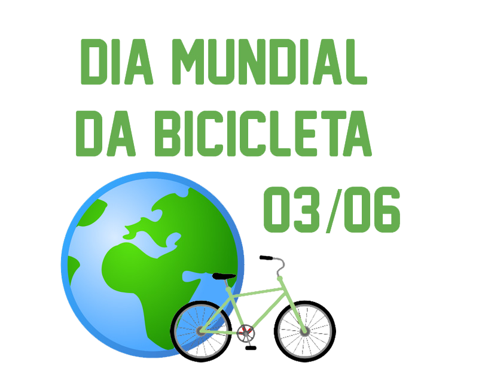

Para você que gosta e quer conhecer mais sobre esse meio de transporte sustentável, todos os anos acontecem eventos diversos relacionados a bicicleta e sustentabilidade, eventos onde ocorrem pedaladas, em vários estados e durante todo o ano pelo Brasil.
No dia 03 de junho é comemorado mundialmente o dia da bicicleta.
É um dia para os amantes deste meio de transporte, foi comemorado pela primeira vez em 2018 e é um dia muito importante para os ciclistas, por ser um dia onde este meio de transporte simples, de baixo custo e sustentável ganha destaque.
Promovido pela CO.bike, o evento “Pedal Sustentável” aconteceu no Parque do 18 do Forte no sábado dia 16 de dezembro de 2017.
O evento foi gratuito e reuniu pessoas de todas as idades. De início, o evento mostrava como pedalar com segurança e sobre a utilização de equipamentos, legislação em vigor e dicas importantes para quem anda de bicicleta pela cidade.
Em seguida, os participantes saíram em passeio ciclístico pela vizinhança, sendo conduzidos por especialistas.
O Bloco do Pedal é um trio elétrico de Carnaval, porém formado por bicicletas geradoras de energia! Energia renovável e elétrica limpa, sem o uso de acumuladores de baterias. Em 2019 é comemorada a sua quarta edição em São Paulo.
Localizado na Vila Mariana, em São Paulo, é um evento para reunir a familía e pedalar! já que neste bloco, para que a música toque nas caixas de som, os participantes deverão pedalar.